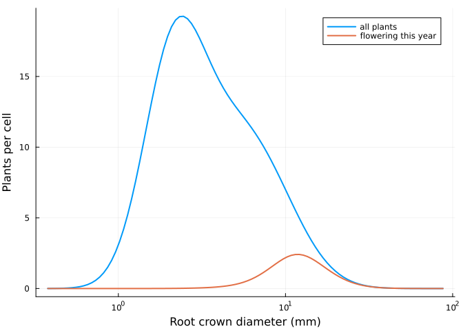
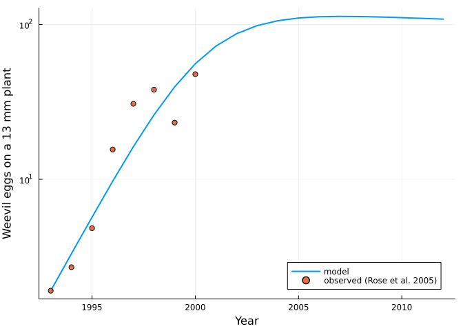
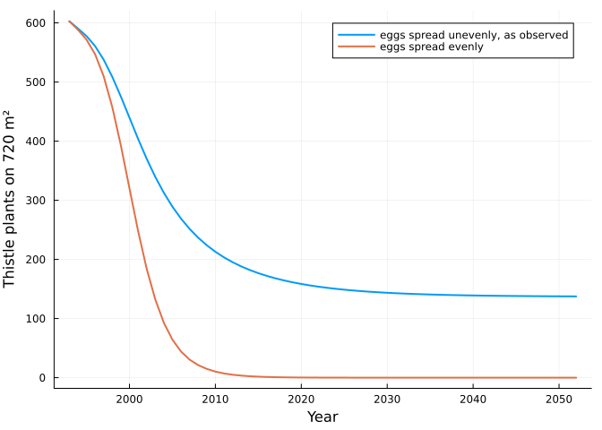
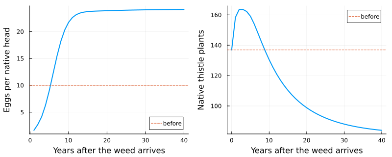
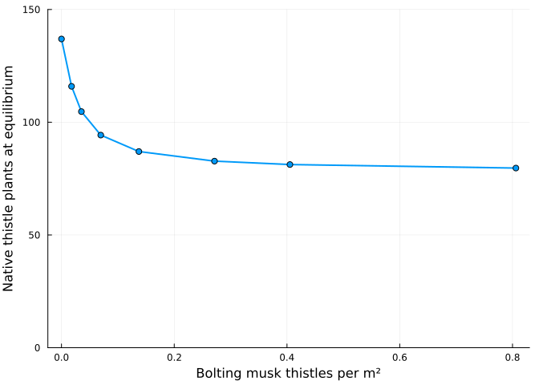
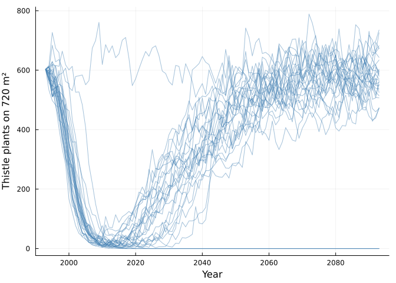

A native thistle, a weed and a weevil: an integral projection model among matrix models
Simon Frost
- Three species, three kinds of model
- The native thistle is an integral projection model
- Seed-limited recruitment
- Flower heads and weevil eggs are pools
- The weevil is a species
- The weed is a matrix model
- All three
- Small numbers
- The mesh does not matter
- What is measured and what is assumed
- References
ENV["GKSwstype"] = "100"
using MatrixCommunityModels
using LinearAlgebra, Random, Statistics
using PlotsThree species, three kinds of model
The weevil Rhinocyllus conicus was released in North America from 1969 to control musk thistle (Carduus nutans), an invasive weed. Its larvae feed inside flower heads and destroy seed. In 1993 it appeared on Platte thistle (Cirsium canescens), a native of the Nebraska Sand Hills that flowers once and dies, and the thistle has declined since (Louda et al. 1997; Rose et al. 2005; Rand et al. 2020).
Each species has been described in the way that suits it:
- Platte thistle by an integral projection model (IPM), because survival, flowering and seed set all depend on a plant’s size (Rose et al. 2005);
- musk thistle by a matrix model with a seed bank and three classes of rosette (Jongejans et al. 2008);
- the weevil, with one generation a year, by its number of adults.
This vignette composes the three. The earlier vignette on IPMs introduced the tools on an invented plant; here the models and almost all the numbers are published. Since one of the three species is an IPM, the community is solved by IntegralProjectionModels.jl, with the musk thistle and the weevil as populations of discrete classes. The species meet only through three pools: the flower heads on offer to egg-laying weevils, the number of weevils those heads can rear (rearing), and the eggs laid.
The native thistle is an integral projection model
Size is the logarithm of root crown diameter in mm, and the time step is a year. The life cycle has two transitions, each a kernel built from the fitted functions of Rose et al. (their Table 2):
plant = platte_thistle_stage() # plants by size, in 100 cells
x = meshpoints(plant)
logistic(u) = 1 / (1 + exp(-u))
normal(y, mean, variance) = exp(-0.5 * (y - mean)^2 / variance) / sqrt(2π * variance)
survival(x) = logistic(-0.62 + 0.85x)
flowering(x) = logistic(-10.22 + 4.25x) # a plant flowers once and dies
growth(y, x) = normal(y, 0.83 + 0.69x, 0.19)
seeds(x) = exp(0.37 + 2.02x) # of a flowering plant, without insects
seedling(y) = normal(y, 0.75, 0.17)
life = kernel_net(plant,
:growing => (y, x) -> survival(x) * (1 - flowering(x)) * growth(y, x),
:seeding => (y, x) -> survival(x) * flowering(x) * seeds(x) * seedling(y))ResponsiveProjectionNet(100 stages, 2 transitions, 0 responses)platte_thistle() builds this net from PLATTE_THISTLE_PARAMETERS and attaches the responses described below. If every seed has the same chance of establishing, the model is linear and has a growth rate:
rate(sp) = maximum(abs, eigvals(community_matrix(sp, zeros(length(sp)), nothing)))
(without_insects = rate(platte_thistle(native_insects = false, seed_limited = false)),
with_native_insects = rate(platte_thistle(seed_limited = false)))(without_insects = 1.3293045416613871, with_native_insects = 1.019338009700462)Rose et al. report 1.38 and 1.05. Native insects that feed in the flower heads destroy 65% of the seed, which is the whole difference between the two. The rates here are lower because the paper tabulates a chance of establishment of 0.067; a chance of 0.077 gives both published rates:
more = merge(PLATTE_THISTLE_PARAMETERS, (establishment = 0.077,))
(without_insects = rate(platte_thistle(parameters = more, native_insects = false, seed_limited = false)),
with_native_insects = rate(platte_thistle(parameters = more, seed_limited = false)))(without_insects = 1.3806972456134698, with_native_insects = 1.0536241967512658)Seed-limited recruitment
The thistle is limited by seed: the recruits of a year are the seeds produced the year before raised to the power 0.67, so a seed is less likely to establish in a large crop. This is a response on seeding that depends on the population’s own state. The fitted curve gives a seed in a very small crop an impossible chance, so the chance is capped at 0.47, the value measured by sowing seeds at low density at the same site (Rand et al. 2020). The model now has an equilibrium:
start = 600 .* step_size(plant) .* seedling.(x) # 600 seedlings
bare = equilibrium(platte_thistle(native_insects = false), start, nothing)
alone = equilibrium(platte_thistle(), start, nothing)
(without_insects = round(Int, sum(bare.n)), with_native_insects = round(Int, sum(alone.n)))(without_insects = 5079, with_native_insects = 603)Rose et al. give about 5000 and about 600 plants. Numbers are plants on 720 m², the area of their plots, which held about 500 plants before the weevil arrived. Three more quantities can be checked against the field:
flowers(n) = survival.(x) .* flowering.(x) .* n # plants that flower this year, by size
f = flowers(alone.n)
(flowering_per_m2 = round(sum(f) / 720; digits = 3),
their_mean_diameter_mm = round(sum(f .* exp.(x)) / sum(f); digits = 1),
seeds_per_m2 = round(0.35 * sum(f .* seeds.(x)) / 720; digits = 1))(flowering_per_m2 = 0.061, their_mean_diameter_mm = 12.8, seeds_per_m2 = 6.4)Flowering plants were about 13 mm across (Rose et al.). There were more than 0.015 of them per m² in 1990 to 1996, and the seed rain before the weevil was 4 seeds per m² (Rand et al. 2020, the second citing earlier work).
plot(exp.(x), [alone.n f]; xscale = :log10, lw = 2, label = ["all plants" "flowering this year"],
xlabel = "Root crown diameter (mm)", ylabel = "Plants per cell")
Flower heads and weevil eggs are pools
Rose et al. found that a plant’s seed set falls by 2% for each weevil egg laid on it, and that larger plants carry more eggs: the number rises as diameter to the power 1.71. In platte_thistle() this is written with two pools. A flowering plant offers its flower heads to the pool heads, and receives a share of the pool eggs in proportion. The average flowering plant starts 10.4 heads (West & Louda 2018), and the number is taken to rise with size as the egg load does. Eggs are spread very unevenly among plants of the same size, which spares many plants; aggregated = false gives every plant the mean instead.
Before making the weevil a species, the eggs can be imposed as they were observed. The paper’s Table 1 gives the egg load on a plant of size x in each year as exp(c + 1.71x):
observed = [1993 => -3.74, 1994 => -3.39, 1995 => -2.81, 1996 => -1.64,
1997 => -0.96, 1998 => -0.75, 1999 => -1.24, 2000 => -0.52]
lost(sp) = round(Int, 100 * (1 - sum(equilibrium(sp, start, nothing).n) / sum(alone.n)))
for (year, c) in observed[[1, 4, 6, 8]]
eggs = x -> exp(c + 1.71x)
println(year, ": ", round(eggs(log(13)); digits = 1), " eggs on a 13 mm plant; growth rate ",
round(rate(platte_thistle(seed_limited = false, eggs = eggs)); digits = 2), " (",
round(rate(platte_thistle(seed_limited = false, eggs = eggs, aggregated = false)); digits = 2),
" if eggs were spread evenly); plants lost at equilibrium ", lost(platte_thistle(eggs = eggs)),
"% (", lost(platte_thistle(eggs = eggs, aggregated = false)), "%)")
end1993: 1.9 eggs on a 13 mm plant; growth rate 1.0 (1.0 if eggs were spread evenly); plants lost at equilibrium 12% (14%)
1996: 15.6 eggs on a 13 mm plant; growth rate 0.95 (0.9 if eggs were spread evenly); plants lost at equilibrium 46% (66%)
1998: 37.9 eggs on a 13 mm plant; growth rate 0.91 (0.79 if eggs were spread evenly); plants lost at equilibrium 63% (90%)
2000: 47.8 eggs on a 13 mm plant; growth rate 0.9 (0.75 if eggs were spread evenly); plants lost at equilibrium 67% (93%)Rose et al. report a growth rate below one in every year after 1995, a loss of up to 95% of plants at equilibrium if eggs were spread evenly, and of 69% by 2002 with the uneven spread observed.
The weevil is a species
The weevil’s life cycle is one transition: adults in spring lay eggs, the larvae develop in flower heads, and the new adults overwinter.
WEEVIL_PARAMETERS(eggs = 50.0, survival = 0.32, overwintering = 0.11)A female lays about 100 eggs (Surles 1972), so an adult lays 50; 32% of eggs laid on musk thistle in the field gave adults (Surles 1972). Survival through the winter is the least certain number. Cages gave 3% to 29% (Smith 1982) and 48% (Kok 1976). It is set to 11%, so that a rare weevil population grows 1.76-fold a year, for a reason given below.
Larvae compete inside heads. A Platte thistle head that flowers can rear 10 to 13 weevils (Louda et al. 2011), and the thistle adds what its heads can rear to the pool rearing. The more eggs there are for that capacity, the smaller the share that develops. The weevil’s own definition names no thistle: it lays into eggs and reads rearing.
native, weevil = platte_thistle(), flowerhead_weevil()
pair = community(native, weevil)OpenCommunity(platte_thistle, weevil; pools = heads, rearing, eggs)The projection starts in 1993 with the thistle at its equilibrium and with as many weevils as lay the eggs observed that year, about two.
P, W = PLATTE_THISTLE_PARAMETERS, WEEVIL_PARAMETERS
arrivals = exp(-3.74) / P.heads[1] * pool_totals(native, alone.n, nothing).heads / W.eggs
sol = project(pair, [alone.n; arrivals], fill(nothing, 60))
pool(c, s, name) = s.pools[1:(end - 1), findfirst(==(name), pool_names(c))]
eggs_per_head = pool(pair, sol, :eggs) ./ pool(pair, sol, :heads)
on_13mm(per_head) = per_head .* P.heads[1] .* 13^P.heads[2] # eggs on a plant 13 mm across
years = 1993 .+ (0:59)
plot(years[1:20], on_13mm(eggs_per_head)[1:20]; yscale = :log10, lw = 2, label = "model",
xlabel = "Year", ylabel = "Weevil eggs on a 13 mm plant", legend = :bottomright)
scatter!(first.(observed), exp.(last.(observed) .+ 1.71 * log(13)); label = "observed (Rose et al. 2005)")
The projected egg loads stay within a factor of two of those observed. The loads of 1994 to 2000 were not used to set any parameter. The one calibrated number, winter survival, was chosen so that the weevils reared in a flowering head settle at five, the number found at this site in 1995 and 1996 (Louda 1998); 3.3 were found across 108 sites (Rand & Louda 2006).
thistles = abundance(sol, :platte_thistle)
reared = W.survival .* pool(pair, sol, :eggs) ./ (1 .+ W.survival .* pool(pair, sol, :eggs) ./ pool(pair, sol, :rearing))
(weevils_per_flowering_head_2052 = round(reared[60] / pool(pair, sol, :heads)[60] * 10.4 / 3.8; digits = 1),
thistles_2002 = round(Int, thistles[10]), thistles_2052 = round(Int, thistles[60]),
flowering_per_m2_2052 = round(sum(flowers(sol.u[60, 1:100])) / 720; digits = 3))(weevils_per_flowering_head_2052 = 5.0, thistles_2002 = 370, thistles_2052 = 137, flowering_per_m2_2052 = 0.014)The thistle settles at less than a quarter of its former numbers, with 0.014 flowering plants per m². In the field the density of flowering plants fell below 0.015 per m² after 1996 and stayed there until the study ended in 2009 (Rand et al. 2020).
If the eggs were spread evenly among plants, the weevil would destroy the thistle and then itself:
evenly = project(community(platte_thistle(aggregated = false), weevil), [alone.n; arrivals], fill(nothing, 60))
plot(years, [thistles[1:60] abundance(evenly, :platte_thistle)[1:60]]; lw = 2, xlabel = "Year",
ylabel = "Thistle plants on 720 m²", label = ["eggs spread unevenly, as observed" "eggs spread evenly"])
(thistles_2002_if_even = round(Int, abundance(evenly, :platte_thistle)[10]),
last_thistle = 1992 + findfirst(<(1), abundance(evenly, :platte_thistle)))(thistles_2002_if_even = 185, last_thistle = 2017)The model reaches the levels seen in the field, but too slowly. The plots held 529 plants at most and 56 at least between 1991 and 2002, falling steadily after 1993 (Rose et al. 2005), a faster fall than either projection.
The weed is a matrix model
Musk thistle is written from the vital rates of the published matrix model, for a natural population in Kansas (Zhang et al. 2011, after Jongejans et al. 2008). Its stages are a seed bank and small, medium and large rosettes. Its transitions are dormancy, emerging from the seed bank, growing for rosettes that survive without bolting, and seed_rain and establishing for the seeds of plants that bolt, flower and die.
weed = musk_thistle()
round.(community_matrix(weed, zeros(4), nothing); digits = 4)4×4 Matrix{Float64}:
0.2597 0.0916 9.2153 256.845
0.0251 0.025 0.9922 27.654
0.0049 0.1739 0.4156 5.3736
0.0 0.0272 0.1379 0.0rate(weed)1.7482683163797041The published growth rate is 1.748. Two responses are added to the published model. The first bounds it: a weed that multiplies 1.75-fold a year needs something to stop it, and musk thistle needs open ground to establish. The seedlings of a year compete for the sites that hold no rosette. The number of sites is not measured. It sets how abundant the weed is, and the default gives a density near the middle of those found in Nebraska (0.06 to 9.75 bolting plants per m², median 0.46; Russell et al. 2007):
M = MUSK_THISTLE_PARAMETERS
stand = equilibrium(weed, [1000.0, 10.0, 5.0, 1.0], nothing)
bolting(n) = sum(M.survival[j] * M.bolting[j] * n[j + 1] for j in 1:3) # rosettes that bolt next summer
(seed_bank = round(Int, stand.n[1]), rosettes = round(Int, sum(stand.n[2:4])),
bolting_per_m2 = round(bolting(stand.n) / 720; digits = 2))(seed_bank = 72469, rosettes = 2993, bolting_per_m2 = 0.45)The second response is the weevil. The published model has a multiplier for the share of seed that escapes insects in the flower heads. Here that share follows from the same pools as before. A bolting plant offers its early heads, the ones open while weevils lay; each draws 2.3 times the eggs of a Platte thistle head (Arnett & Louda 2002), can hold about 25 larvae (Rees 1978), and loses 29.6 of its 448 seeds to each larva that develops (Popay et al. 1984).
biocontrol = community(weed, weevil)
held = equilibrium(biocontrol, [stand.n; 5.0], nothing)
on_weed = pool_totals(biocontrol, held.n, nothing)
larvae = W.survival * M.attraction * on_weed.eggs / on_weed.heads / (1 + W.survival * on_weed.eggs / on_weed.rearing)
(rosettes = round(Int, sum(held.n[2:4])), weevils = round(Int, held.n[5]),
eggs_per_weed_head = round(M.attraction * on_weed.eggs / on_weed.heads; digits = 1),
larvae_per_head = round(larvae; digits = 1),
seed_lost = round(M.exposed * min(1, larvae * M.seeds_per_larva / M.seeds_per_head); digits = 2))(rosettes = 2690, weevils = 274, eggs_per_weed_head = 59.4, larvae_per_head = 10.8, seed_lost = 0.36)The weevil takes a third of the weed’s seed and the weed falls by a tenth. Control as weak as this is what Shea & Kelly (1998) reported from New Zealand, where the weevil destroyed 30 to 40% of the seed and their matrix model needed 69%. This matrix says the same: the weed stops growing only when three quarters of its seed is lost.
[round(rate(musk_thistle(parameters = merge(M, (seeds = (1 - loss) .* M.seeds,)))); digits = 2) for loss in (0.0, 0.36, 0.75)]3-element Vector{Float64}:
1.75
1.44
1.0All three
Composing the three species needs no change to any of them.
trio = community(native, weed, weevil)
settled = equilibrium(pair, sol.u[end, :], nothing)
all3 = equilibrium(trio, [settled.n[1:100]; held.n], nothing)
with_weevil, with_both = pool_totals(pair, settled.n, nothing), pool_totals(trio, all3.n, nothing)
(eggs_per_native_head = (weevil_only = round(with_weevil.eggs / with_weevil.heads; digits = 1),
with_the_weed = round(with_both.eggs / with_both.heads; digits = 1)),
native_plants = (weevil_only = round(Int, sum(settled.n[1:100])), with_the_weed = round(Int, sum(all3.n[1:100]))))(eggs_per_native_head = (weevil_only = 10.0, with_the_weed = 24.2), native_plants = (weevil_only = 137, with_the_weed = 81))Beside the weed, each native head carries more than twice the eggs, and the native thistle loses a further 40% of its plants. The weed harms the native without touching it, through the weevils it rears: apparent competition. The reason is in two numbers, the weevils that a head can rear for each unit of eggs it draws:
(native_head = P.weevils_per_head, weed_head = M.weevils_per_head / M.attraction)(native_head = 4.2, weed_head = 10.869565217391305)Weevil numbers rise until larvae are crowded enough to stop them. Weed heads have room for more larvae for the eggs they draw, so where they supply most of the heads the weevils reach a higher density, and the native heads receive more eggs.
The first effect of the weed is the opposite. Suppose a stand of the weed comes within reach of weevils settled on the native thistle. The same weevils now spread their eggs over many more heads:
reach = project(trio, [settled.n[1:100]; held.n[1:4]; settled.n[101]], fill(nothing, 40))
load = pool(trio, reach, :eggs) ./ pool(trio, reach, :heads)
before = with_weevil.eggs / with_weevil.heads
p1 = plot(1:40, load; lw = 2, label = "", xlabel = "Years after the weed arrives", ylabel = "Eggs per native head")
hline!(p1, [before]; ls = :dash, label = "before")
p2 = plot(0:40, abundance(reach, :platte_thistle); lw = 2, label = "", xlabel = "Years after the weed arrives",
ylabel = "Native thistle plants")
hline!(p2, [sum(settled.n[1:100])]; ls = :dash, label = "before")
plot(p1, p2; layout = (1, 2), size = (800, 320), left_margin = 4Plots.mm, bottom_margin = 4Plots.mm)
(eggs_per_native_head = (before = round(before; digits = 1), first_year = round(load[1]; digits = 1), year_20 = round(load[20]; digits = 1)),
native_plants = (before = round(Int, sum(settled.n[1:100])), most = round(Int, maximum(abundance(reach, :platte_thistle))),
in_year = argmax(abundance(reach, :platte_thistle)) - 1, year_40 = round(Int, abundance(reach, :platte_thistle)[41])))(eggs_per_native_head = (before = 10.0, first_year = 1.6, year_20 = 23.9), native_plants = (before = 137, most = 164, in_year = 3, year_40 = 84))For a few years the weed protects the native thistle; then the weevils multiply on the weed and the native thistle is worse off than before. Both effects have been measured, on another native, wavyleaf thistle. Its egg load fell as Platte thistle offered more flower heads at a site (Russell & Louda 2005), and rose three- to fivefold with the density of musk thistle (Rand & Louda 2004).
How much weed does it take? The number of sites sets the weed’s density:
function beside(sites)
c = community(native, musk_thistle(parameters = merge(M, (sites = sites,))), weevil)
e = equilibrium(c, [settled.n[1:100]; held.n .* sites ./ M.sites], nothing)
return (weed = bolting(e.n[101:104]) / 720, native = sum(e.n[1:100]))
end
runs = [beside(sites) for sites in (250.0, 500.0, 1000.0, 2000.0, 4000.0, 6000.0, 12000.0)]
plot([0.0; [r.weed for r in runs]], [sum(settled.n[1:100]); [r.native for r in runs]]; marker = :circle, lw = 2, label = "",
xlabel = "Bolting musk thistles per m²", ylabel = "Native thistle plants at equilibrium", ylims = (0, 150))
Little weed is needed: most of the effect is there at 0.1 bolting plants per m².
Can the native thistle persist beside the weed at all? Its growth rate when rare, in the community of weed and weevil, answers that:
(eggs_spread_unevenly = invasion_growth_rate(native, biocontrol, held.n, nothing),
eggs_spread_evenly = invasion_growth_rate(platte_thistle(aggregated = false), biocontrol, held.n, nothing))(eggs_spread_unevenly = 1.2992491766060492, eggs_spread_evenly = 0.6196951337217237)With eggs spread unevenly, as observed, a rare native thistle increases and so persists; with eggs spread evenly it would be excluded. The answer rests on how weevils distribute their eggs when there are very many of them, which has not been measured.
For Platte thistle itself the field evidence is against a large role for the weed: weevil numbers on it were not related to the abundance of musk thistle, and were highest in the centre of the Sand Hills, where the weed is rare (Rand & Louda 2006). The model agrees that the weed is not needed, since the weevil persists on the native thistle alone. What the three-species community adds is a statement of what would happen where the two thistles share weevils, and on what it depends.
Small numbers
A hundred plants and twenty weevils are few enough for chance to matter. ensemble projects whole individuals: each plant survives, grows or flowers by chance, and the numbers of seedlings and new weevils are Poisson.
function whole(n, rng) # whole plants drawn from the size distribution n
cells, cumulative = zeros(length(n)), cumsum(n) ./ sum(n)
for _ in 1:round(Int, sum(n))
cells[searchsortedfirst(cumulative, rand(rng))] += 1
end
return cells
end
function outcome(ens)
plants, weevils = abundance(ens, :platte_thistle), abundance(ens, :weevil)
return (median_plants = median(plants[:, end]), nine_in_ten_between = quantile(plants[:, end], [0.05, 0.95]),
thistle_lost = count(==(0), plants[:, end]), weevil_lost = count(==(0), weevils[:, end]))
end
rng = MersenneTwister(14)
century = fill(nothing, 100)
two = ensemble(pair, [whole(settled.n[1:100], rng); round(settled.n[101])], century; replicates = 200, rng = MersenneTwister(1))
three = ensemble(trio, [whole(all3.n[1:100], rng); round.(all3.n[101:105])], century; replicates = 200, rng = MersenneTwister(1))
(thistle_and_weevil = outcome(two), with_the_weed = outcome(three))(thistle_and_weevil = (median_plants = 144.5, nine_in_ten_between = [96.0, 219.39999999999986], thistle_lost = 0, weevil_lost = 10), with_the_weed = (median_plants = 74.0, nine_in_ten_between = [38.95, 112.09999999999997], thistle_lost = 1, weevil_lost = 0))Over a century, starting from the settled communities, the native thistle is almost never lost, with or without the weed. Where it is the only host the weevil dies out in one run in twenty; beside the weed it never does. Chance does change the case of evenly spread eggs, in which the deterministic model lost both thistle and weevil:
even = ensemble(community(platte_thistle(aggregated = false), weevil), [whole(alone.n, rng); 2.0], century;
replicates = 200, rng = MersenneTwister(1))
plot(1993 .+ (0:100), abundance(even, :platte_thistle)[1:30, :]'; label = "", lw = 1, alpha = 0.5, color = :steelblue,
xlabel = "Year", ylabel = "Thistle plants on 720 m²")
outcome(even)(median_plants = 572.5, nine_in_ten_between = [0.0, 703.2499999999999], thistle_lost = 24, weevil_lost = 200)The weevil always dies out, and usually before the last thistle does. The thistle then recovers from a handful of plants. In the field weevils would return from elsewhere, so this shows how chance acts in the model, not what to expect.
The mesh does not matter
for cells in (50, 100, 200)
stage = platte_thistle_stage(; cells)
seedlings = 600 .* step_size(stage) .* seedling.(meshpoints(stage))
e = equilibrium(community(platte_thistle(; cells), weevil), [seedlings; 2.0], nothing)
println(cells, " cells: ", round(sum(e.n[1:cells]); digits = 2), " thistles, ", round(e.n[end]; digits = 2), " weevils")
end50 cells: 136.93 thistles, 20.68 weevils
100 cells: 136.93 thistles, 20.68 weevils
200 cells: 136.93 thistles, 20.68 weevilsWhat is measured and what is assumed
| Quantity | Value | Source |
|---|---|---|
| Native thistle: growth, survival, flowering, seed set, seedling size | fitted functions | Rose et al. 2005, Table 2 |
| Seed lost to native insects | 65% | Rose et al. 2005 |
| Recruits from seeds | seeds^0.67 | Rose et al. 2005 |
| Greatest chance that a seed establishes | 0.47 | Rand et al. 2020 |
| Seed lost per weevil egg; eggs by plant size; uneven spread | 2%; diameter^1.71; k = 0.32 | Rose et al. 2005, Table 1 |
| Heads started by a flowering plant; heads that flower | 10.4; 3.8 | West & Louda 2018 |
| Weevils a flowering native head can rear | 10 to 13 | Louda et al. 2011 |
| Weed: vital rates | Kansas population | Zhang et al. 2011, after Jongejans et al. 2008 |
| Weed: seeds in a head; seeds destroyed by a larva | 448; 29.6 | Popay et al. 1984 |
| Weed: larvae a head can hold | 25 | Rees 1978 (means of 18 to 28) |
| Weed: eggs drawn by a head, relative to a native head | 2.3 | Arnett & Louda 2002, read from a figure |
| Weevil: eggs per female; egg to adult | 100; 0.32 | Surles 1972 |
| Weevil: survival through winter | 0.11 | calibrated within 0.03 to 0.48 (Smith 1982; Kok 1976) |
| Weed: share of heads open while weevils lay | 0.5 | assumed |
| Weed: sites of open ground | 6000 | assumed; sets the weed’s density |
| Heads on a native plant rise with size as the egg load does | assumed | |
| Eggs are shared among heads in proportion; larvae are crowded alike in all heads | assumed |
The model differs from the field in these ways:
- The native thistle falls too slowly, as shown above. Louda et al. (1997) found 4.8 viable seeds in heads with weevils against 35.4 in heads without, a larger loss than the 2% per egg fitted to whole plants, and years differ in ways the model ignores.
- The weevil’s rate of increase when rare, 1.76 a year, was calibrated on Platte thistle, and the model’s weed falls by a tenth. In Virginia the weevil did far more: the flower buds of musk thistle fell by 80% and 97% at two sites in the eleven years after release (Kok & Pienkowski 1985).
- At equilibrium a weed head carries 59 eggs. In Nebraska patches the mean was 3 to 36 (Russell et al. 2007); in Montana it reached 134 (Rees 1978).
- The uneven spread of eggs among plants is held at its fitted value however many eggs there are.
- The two thistles grow on different soils. The model lets them share weevils completely and leaves out wavyleaf thistle, the other native host.
The papers of Rose et al., Louda et al. (1997, 2011), Louda (1998), West & Louda, Rand & Louda (2006), Rand et al. (2020) and Russell et al. (2007, appendix) were read for the numbers taken from them, as were the tables of Zhang et al., Popay et al., Rees, Smith and Surles and the figure of Arnett & Louda. Rand & Louda (2004), Russell & Louda (2005), Kok & Pienkowski (1985) and Shea & Kelly (1998) were read as abstracts, and Kok (1976) as a summary of its abstract. Jongejans et al. (2008) was not read: its rates are taken from the table in Zhang et al.
References
Arnett, A. E. & Louda, S. M. (2002). Re-test of Rhinocyllus conicus host specificity, and the prediction of ecological risk in biological control. Biological Conservation 106, 251-257.
Jongejans, E., Shea, K., Skarpaas, O., Kelly, D., Sheppard, A. W. & Woodburn, T. L. (2008). Dispersal and demography contributions to population spread of Carduus nutans in its native and invaded ranges. Journal of Ecology 96, 687-697.
Kok, L. T. (1976). Overwintering mortality of caged thistle-head weevils, Rhinocyllus conicus, in Virginia. Environmental Entomology 5, 1105-1108.
Kok, L. T. & Pienkowski, R. L. (1985). Biological control of musk thistle by Rhinocyllus conicus (Coleoptera: Curculionidae) in Virginia from 1969 to 1980. Proceedings of the VI International Symposium on Biological Control of Weeds, 433-438.
Louda, S. M. (1998). Population growth of Rhinocyllus conicus (Coleoptera: Curculionidae) on two species of native thistles in prairie. Environmental Entomology 27, 834-841.
Louda, S. M., Kendall, D., Connor, J. & Simberloff, D. (1997). Ecological effects of an insect introduced for the biological control of weeds. Science 277, 1088-1090.
Louda, S. M., Rand, T. A., Kula, A. A. R., Arnett, A. E., West, N. M. & Tenhumberg, B. (2011). Priority resource access mediates competitive intensity between an invasive weevil and native floral herbivores. Biological Invasions 13, 2233-2248.
Popay, A. I., Lyttle, L. A., Edmonds, D. K. & Phung, H. T. (1984). Incidence of the nodding thistle receptacle weevil on nodding and slender winged thistles. Proceedings of the 37th New Zealand Weed and Pest Control Conference, 28-32.
Rand, T. A. & Louda, S. M. (2004). Exotic weed invasion increases the susceptibility of native plants to attack by a biocontrol herbivore. Ecology 85, 1548-1554.
Rand, T. A. & Louda, S. M. (2006). Invasive insect abundance varies across the biogeographic distribution of a native host plant. Ecological Applications 16, 877-890.
Rand, T. A., West, N. M., Russell, F. L. & Louda, S. M. (2020). Post-dispersal factors influence recruitment patterns but do not override the importance of seed limitation in populations of a native thistle. Oecologia 193, 143-153.
Rees, N. E. (1978). Interactions of Rhinocyllus conicus and thistles in the Gallatin Valley. In Frick, K. E. (ed.), Biological control of thistles in the genus Carduus in the United States: a progress report, pp. 31-38. USDA Science and Education Administration.
Rose, K. E., Louda, S. M. & Rees, M. (2005). Demographic and evolutionary impacts of native and invasive insect herbivores on Cirsium canescens. Ecology 86, 453-465.
Russell, F. L. & Louda, S. M. (2005). Indirect interaction between two native thistles mediated by an invasive exotic floral herbivore. Oecologia 146, 373-384.
Russell, F. L., Louda, S. M., Rand, T. A. & Kachman, S. D. (2007). Variation in herbivore-mediated indirect effects of an invasive plant on a native plant. Ecology 88, 413-423.
Shea, K. & Kelly, D. (1998). Estimating biocontrol agent impact with matrix models: Carduus nutans in New Zealand. Ecological Applications 8, 824-832.
Smith, L. M. II (1982). Biological studies of Rhinocyllus conicus, Carduus thoermeri and a model of the interaction between these two species. MS thesis, Virginia Polytechnic Institute and State University.
Surles, W. W. (1972). An analysis of the establishment and impact of an exotic insect, Rhinocyllus conicus, on Carduus nutans and C. acanthoides in Virginia. MS thesis, Virginia Polytechnic Institute and State University.
West, N. M. & Louda, S. M. (2018). Cumulative herbivory outpaces compensation for early floral damage on a monocarpic perennial thistle. Oecologia 186, 495-506.
Zhang, R., Jongejans, E. & Shea, K. (2011). Warming increases the spread of an invasive thistle. PLoS ONE 6, e21725.